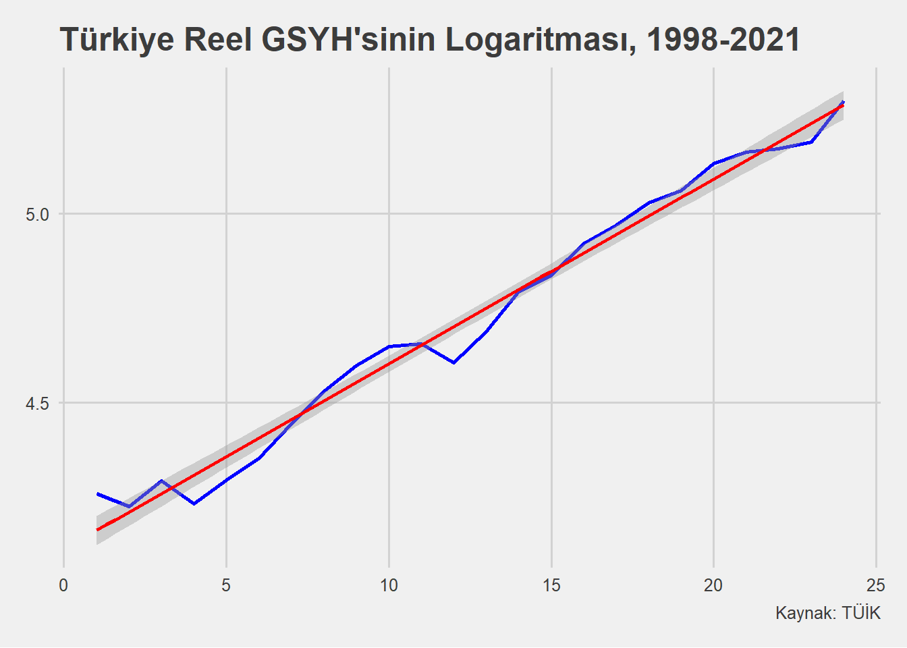

library(readxl)
library(tidyverse)
library(ggthemes)
library(magrittr)
df1 <- read_excel("./data/rmfk1.xls")
df1 %<>%
select(output,labor,capital)3 Regresyon Modellerinin Fonksiyon Yapıları
Klasik Doğrusal Regresyon Modeli’nin varsayımlarından birisi şöyleydi:
- Regresyon modeli parametreler açısından doğrusaldır. Y ve X değişkenlerine göre ise doğrusallık aranmaz.
Parametreler açısından doğrusallık: Parametrelerin kuvveti alınmamış (\(\beta_2^2\) gibi), parametreler diğer parametrelere bölünmemiş (\(\beta_2 / \beta_3\) gibi) veya dönüştürülmemiştir (\(ln\beta_4\) gibi).
Değişkenler açısından: Koşul aranmaz. Örneğin, X değişkeninin doğal logaritması (\(lnX_2\) gibi), tersi (\(1/X_3\) gibi) veya kuvveti (\(X_2^3\) gibi) alınmış olabilir.
Bu başlıkta, parametrelere göre doğrusal olan ancak değişkenlere göre doğrusal olup olmamasının bir önemi olmayan modelleri ele alacağız.
3.1 Log-Log
Log-Log, hem bağımlı değişkenin hem de açıklayıcı değişkenlerin logaritmik yapıda olduğu bir fonksiyon kalıbı türüdür.
Üstel regresyon modelini inceleyelim.
\(Y_i = \beta_1X_i^{\beta_2}e^{\epsilon_i}\)
Yukarıdaki model doğal logaritması alınarak şöyle yazılabilir:
\(lnY_i = ln\beta_1 + \beta_2lnX_i + \epsilon_i\)
Son olarak aşağıdaki forma çevirebiliriz.
\(lnY_i = \alpha + \beta_2lnX_i + \epsilon_i\)
Cobb-Douglas fonksiyonu ile devam edelim.
\(Q_i = \beta_1L_i^{\beta_2}K_i^{\beta_3}\)
\(Q:\) Çıktı
\(L:\) Emek Girdisi
\(K:\) Sermaye
\(\beta_1:\) Sabit
Yukarıdaki model parametreler açısından doğrusal değildir ki bu da doğrusal olmayan yöntemler ile ilerlenmesini gerektirir. Peki, (doğal) logaritmasını alırsak tam da varsayımda istediğimiz gibi parametreler açısından doğrusal olabilir mi?
\(lnQ_i = ln\beta_1 + \beta_2lnL_i + \beta_3lnK_i\)
\(ln\beta_1\)’e A dersek;
\(lnQ_i = A + \beta_2lnL_i + \beta_3lnK_i\) olur. Yazılan eşitlik;
\(Q\), \(L\) ve \(K\) değişkenleri açısından doğrusal değildir
\(A\), \(\beta_2\) ve \(\beta_3\) parametrelerine göre doğrusaldır
Hata terimi \(\epsilon_i\) de eklenirse doğrusal regresyon modelinin son hali elde edilir.
\(lnQ_i = A + \beta_2lnL_i + \beta_3lnK_i + \epsilon_i\)
3.1.1 Uygulama
ABD için Cobb-Douglas fonksiyonuna bakalım. İlgili verilere rmfk1.xls dosyası ile ulaşılabilir.
Bağımlı değişken:
- output: ABD imalat sektörüne ait çıktı (katma değerle ölçülmüş, bin dolar)
Bağımsız değişkenler:
labor: Emek girdisi (çalışma saati, bin saat)
capital: Sermaye girdisi (sermaye harcaması, bin dolar)
Değişkenleri logaritmik yapıda yazalım.
df1 %<>%
mutate(
ln_output = log(output),
ln_labor = log(labor),
ln_capital = log(capital)
)Model kurulabilir.
loglog_model <- lm(ln_output ~ ln_labor + ln_capital, data = df1)
summary(loglog_model)
Call:
lm(formula = ln_output ~ ln_labor + ln_capital, data = df1)
Residuals:
Min 1Q Median 3Q Max
-0.45645 -0.12112 -0.05319 0.04518 1.21579
Coefficients:
Estimate Std. Error t value Pr(>|t|)
(Intercept) 3.88760 0.39623 9.812 4.70e-13 ***
ln_labor 0.46833 0.09893 4.734 1.98e-05 ***
ln_capital 0.52128 0.09689 5.380 2.18e-06 ***
---
Signif. codes: 0 '***' 0.001 '**' 0.01 '*' 0.05 '.' 0.1 ' ' 1
Residual standard error: 0.2668 on 48 degrees of freedom
Multiple R-squared: 0.9642, Adjusted R-squared: 0.9627
F-statistic: 645.9 on 2 and 48 DF, p-value: < 2.2e-16\(Q_i = 48.79L^{0.47}K^{0.52}\)
Sabit değer 3.8876’nın ters logaritması yaklaşık olarak 48.79’dur.
exp(as.numeric(coef(loglog_model)[1]))[1] 48.79362Yukarıdaki model çıktısının yorumları şöyledir:
Çok küçük p değerlerine sahip regresyon parametreleri bireysel açıdan istatistiksel olarak anlamlıdır.
F istatistiğine ait p değeri çok küçük olduğu için model istatistiksel olarak anlamlıdır.
0.96 gibi çok yüksek bir \(R^2\) sevindirici olmak ile beraber bir soru işareti de yaratabilir.
Log-Log modellerde eğim parametreleri esneklik olarak yorumlanabilir. Aynı zamanda ölçüm birimleri ortadan kalkar ve yüzde değişim altında değerlendirilirler.
Sermaye girdisi (ln_capital) sabit iken, emek girdisi (ln_labor) %1 artırılırsa imalat sektörüne ait çıktı ortalamada %0.47 artar.
Emek girdisi (ln_labor) sabit iken, sermaye girdisi (ln_capital) %1 artırılırsa imalat sektörüne ait çıktı ortalamada %0.52 artar.
3.2 Log-Lin
Bağımlı değişkenin logaritmik; diğer açıklayıcı değişkenlerin düzey ya da doğrusal yapıda olduğu bir fonksiyon kalıbı türüdür.
Bileşik faiz formülünü anımsayalım.
\(Y_t = Y_0(1+r)^t\)
r, Y’nin bileşik (zaman içindeki) büyüme hızıdır.
Eşitliğin logaritmasını alalım.
\(lnY_t = lnY_0 + tln(1+r)\)
\(lnY_0\), \(\beta_1\); \(ln(1+r)\) ise \(\beta_2\) olsun.
\(lnY_t = \beta_1 + \beta_2t + \epsilon_t\) olur.
Belli bir dönem (1998-2021 olsun) için reel GSYH’nin büyüme hızı ölçülmek isteniyorsa \(RGDP_t = RGDP_{1998}(1+r)^t\) modeli kullanılabilir.
\(RGDP:\) Reel GSYH
\(r:\) Büyüme hızı
\(t:\) Kronolojik zaman
Her iki tarafın (doğal) logaritmasını alalım.
\(lnRGDP_t = lnRGDP_{1998} + tln(1+r)\)
\(\beta_1\), \(lnRGDP_{1998}\) ve \(\beta_2\), \(ln(1+r)\) olsun.
\(lnRGDP_t = \beta_1 + \beta_2t + \epsilon_t\) olur. Bu eşitlikte açıklayıcı değişken zamandır. Yani, t = 1,2,3,…,24.
3.2.1 Uygulama
Türkiye’nin reel GSYH büyüme hızına bakalım. Bu uygulamada, TÜİK’ten elde edilen mevsim ve takvim etkisinden arındırılmış harcama yöntemiyle GSYH, zincirlenmiş hacim endeksi kullanılacaktır. İlgili verilere rmfk2.xlsx dosyası ile ulaşılabilir.
Aşağıda açıklayıcı değişken olarak zaman değişkenini (t) ve RGDP’nin (doğal) logaritmasını ekledik.
df2 <- read_excel("./data/rmfk2.xlsx")
df2 %<>%
mutate(
t = seq(1,nrow(.),1),
ln_rgdp = log(rgdp)
)Bağımlı değişken:
- ln_rgdp: TÜİK’ten elde edilen mevsim ve takvim etkisinden arındırılmış harcama yöntemiyle GSYH, zincirlenmiş hacim endeksi
Bağımsız değişken:
- t: Zaman
ggplot(df2, aes(x = t, y = ln_rgdp)) +
geom_line(color = "blue", size = 1) +
geom_smooth(method = "lm", color = "red", size = 1) +
theme_fivethirtyeight() +
labs(
title = "Türkiye Reel GSYH'sinin Logaritması, 1998-2021",
caption = "Kaynak: TÜİK"
)
Modeli kuralım.
loglin_model <- lm(ln_rgdp ~ t, data = df2)
summary(loglin_model)
Call:
lm(formula = ln_rgdp ~ t, data = df2)
Residuals:
Min 1Q Median 3Q Max
-0.09438 -0.02607 0.01240 0.02780 0.09694
Coefficients:
Estimate Std. Error t value Pr(>|t|)
(Intercept) 4.11259 0.01986 207.09 <2e-16 ***
t 0.04891 0.00139 35.19 <2e-16 ***
---
Signif. codes: 0 '***' 0.001 '**' 0.01 '*' 0.05 '.' 0.1 ' ' 1
Residual standard error: 0.04713 on 22 degrees of freedom
Multiple R-squared: 0.9825, Adjusted R-squared: 0.9818
F-statistic: 1239 on 1 and 22 DF, p-value: < 2.2e-16Yukarıdaki model çıktısının yorumları şöyledir:
Çok küçük p değerlerine sahip regresyon parametreleri bireysel açıdan istatistiksel olarak anlamlıdır.
F istatistiğine ait p değeri çok küçük olduğu için model istatistiksel olarak anlamlıdır.
Büyüme hızını hesaplamak için \(\beta_2\) 100 ile çarpılır. Model, 1998-2021 döneminde Türkiye reel GSYH’sinin yıllık %4.9 oranında artmış olduğunu gösteriyor. 35.19 tahmin edilen t değeri istatistiksel açıdan oldukça anlamlıdır. Bu da aynı zamanda büyüme hızının anlamlı olduğunu gösterir.
Kesme terimi 4.11’in ters logaritması 61.11’dir. Bu da aşağı yukarı 1998’e ait değerdir.
df2$rgdp[1][1] 70.7\(\beta_2\) parametresi bileşik büyüme hızı r’yi değil; anlık büyüme hızını verir. Eğer \(r = exp(\beta_2)-1\) yapılırsa bileşik büyüme hızına ulaşılır.
exp(as.numeric(coef(loglin_model)[2])) - 1[1] 0.05012937Yani, yaklaşık %5.1’dir. Bileşim olması sebebiyle anlık büyüme hızı %4.9’dan biraz daha fazla hesaplanmıştır.
3.2.2 Ek: Doğrusal Trend Modeli
Yukarıdaki büyüme modeli yerine doğrusal trend modeli ile tahmin etmek istediğimizi varsayalım.
\(RGDP_t = \beta_1 + \beta_2zaman + \epsilon_t\)
Yukarıdaki eşitlikte, \(\beta_2\) eğim parametresi birim dönemde RGDP’deki mutlak değişimi verir. \(\beta_2\) pozitif ise RGDP’de (farklı bir değişken de olabilirdi) yükselen bir trend vardır. Tam tersi, negatif ise azalan bir trend anlamına gelecektir.
dtrend_model <- lm(rgdp ~ t, data = df2)
summary(dtrend_model)
Call:
lm(formula = rgdp ~ t, data = df2)
Residuals:
Min 1Q Median 3Q Max
-16.4597 -3.4598 -0.7431 3.3737 17.1847
Coefficients:
Estimate Std. Error t value Pr(>|t|)
(Intercept) 47.7931 3.3730 14.17 1.54e-12 ***
t 5.7222 0.2361 24.24 < 2e-16 ***
---
Signif. codes: 0 '***' 0.001 '**' 0.01 '*' 0.05 '.' 0.1 ' ' 1
Residual standard error: 8.005 on 22 degrees of freedom
Multiple R-squared: 0.9639, Adjusted R-squared: 0.9623
F-statistic: 587.6 on 1 and 22 DF, p-value: < 2.2e-161998-2021 döneminde endeksin 5.7 arttığını görüyoruz. Aynı zamanda artı işaretli olması yükselen bir trendin olduğunu göstermektedir.
3.3 Lin-Log
Log-Lin ile açıklayıcı değişkendeki 1 birim değişime karşılık bağımlı değişkendeki yüzde büyüme ile ilgileniyorduk. Lin-Log’da ise aşağıdaki model tahmin edilir.
\(Y_i = \beta_1 + \beta_2lnX_i + \epsilon_i\)
Yani, lin-log modellerde bağımlı değişken doğrusal yapıda iken en az bir açıklayıcı değişken logaritmik yapıdadır.
3.3.1 Uygulama
ABD için gıda harcamasına bakalım. İlgili verilere rmfk3.xls dosyası ile ulaşılabilir.
Aşağıda açıklayıcı değişkenin logaritmasını ekledik.
df3 <- read_excel("./data/rmfk3.xls")
df3 %<>%
select(sfdho,expend) %>%
mutate(
ln_expend = log(expend)
)Bağımlı değişken:
- sfdho: Gıda harcamasının toplam harcamadaki payı
Bağımsız değişken:
- expend: Toplam hanehalkı harcaması
linlog_model <- lm(sfdho ~ ln_expend, data = df3)
summary(linlog_model)
Call:
lm(formula = sfdho ~ ln_expend, data = df3)
Residuals:
Min 1Q Median 3Q Max
-0.18180 -0.04350 -0.00654 0.03373 0.48594
Coefficients:
Estimate Std. Error t value Pr(>|t|)
(Intercept) 0.930387 0.036367 25.58 <2e-16 ***
ln_expend -0.077737 0.003591 -21.65 <2e-16 ***
---
Signif. codes: 0 '***' 0.001 '**' 0.01 '*' 0.05 '.' 0.1 ' ' 1
Residual standard error: 0.06875 on 867 degrees of freedom
Multiple R-squared: 0.3509, Adjusted R-squared: 0.3501
F-statistic: 468.6 on 1 and 867 DF, p-value: < 2.2e-16Yukarıdaki model çıktısının yorumları şöyledir:
Çok küçük p değerlerine sahip regresyon parametreleri bireysel açıdan istatistiksel olarak anlamlıdır.
F istatistiğine ait p değeri çok küçük olduğu için model istatistiksel olarak anlamlıdır.
Toplam harcama %1 arttığında gıda harcamasının toplam harcamadaki payı ortalamada 0.0008 birim düşecektir. Burada önemli bir not: Tahmin edilen eğim parametresi değeri 0.01 ile çarpılmalı ya da 100’e bölünmelidir. Yorum şöyle de yapılabilir: Toplam harcama %100 arttığında gıda harcamasının toplam harcamadaki payı ortalamada 0.08 birim azalır.
3.4 Ters Model
Yukarıdaki örneğe ait ilişki ters olabilir mi?
\(Y_i = \beta_1 + \beta_2 (\frac{1}{X_i}) + \epsilon_i\)
\(SFDHO = \beta_1 + \beta_2 (\frac{1}{Expend_i}) + \epsilon_i\)
3.4.1 Uygulama
ggplot(df3, aes(x = ln_expend, y = sfdho)) +
geom_point() +
geom_smooth(method = "lm", color = "red") +
theme_fivethirtyeight() +
labs(
title = "Gıda Harcaması Payı ile Log Toplam Harcama İlişkisi"
)ggplot(df3, aes(x = expend, y = sfdho)) +
geom_point() +
geom_smooth(method = "lm", formula = y ~ poly(x, 2, raw = TRUE), color = "red") +
theme_fivethirtyeight() +
labs(
title = "Gıda Harcaması Payı ile Toplam Harcama İlişkisi"
)df3 %<>%
mutate(
ters_expend = 1 / expend
)Modeli kuralım.
ters_model <- lm(sfdho ~ ters_expend, data = df3)
summary(ters_model)
Call:
lm(formula = sfdho ~ ters_expend, data = df3)
Residuals:
Min 1Q Median 3Q Max
-0.29889 -0.04205 -0.01120 0.03229 0.44606
Coefficients:
Estimate Std. Error t value Pr(>|t|)
(Intercept) 7.726e-02 4.012e-03 19.26 <2e-16 ***
ters_expend 1.331e+03 6.396e+01 20.82 <2e-16 ***
---
Signif. codes: 0 '***' 0.001 '**' 0.01 '*' 0.05 '.' 0.1 ' ' 1
Residual standard error: 0.06968 on 867 degrees of freedom
Multiple R-squared: 0.3332, Adjusted R-squared: 0.3325
F-statistic: 433.3 on 1 and 867 DF, p-value: < 2.2e-16Yukarıdaki model çıktısının yorumları şöyledir:
Çok küçük p değerlerine sahip regresyon parametreleri bireysel açıdan istatistiksel olarak anlamlıdır.
F istatistiğine ait p değeri çok küçük olduğu için model istatistiksel olarak anlamlıdır.
Toplam harcama sonsuza gittiğinde gıda harcaması payı yaklaşık olarak %8’e yerleşecektir. Çünkü açıklayıcı değişken X sonsuza giderken \(\beta_2(1/X_i)\) sıfıra yaklaşır. Y ise limit değer olan \(\beta_1\)’e yaklaşır.
\(\beta_2\) eğim parametresi pozitiftir. Yani, gıda harcaması payının toplam harcamaya göre değişim hızı her noktada negatif olacaktır. Eğer \(\beta_2\) negatif olsaydı bu defa her noktada pozitif olacaktı.
3.5 Polinom Regresyon
3.5.1 Uygulama
Türkiye’nin reel GSYH’si için aşağıdaki modele bakalım.
\(RGDP_t = \beta_1 + \beta_2zaman + \beta_3zaman^2 + \epsilon_t\)
Yukarıdaki eşitlik zaman değişkenine göre karesel fonksiyon ya da ikinci derece polinomdur. Eğer bu modele \(zaman^3\) eklenseydi üçüncü derece bir polinom denklemi olacaktı. Kısaca, açıklayıcı değişkenin en büyük kuvveti polinomun derecesine eşittir.
df2 %<>%
mutate(
t2 = t^2
)Modeli kuralım.
polinom2_model <- lm(rgdp ~ t + t2, data = df2)
summary(polinom2_model)
Call:
lm(formula = rgdp ~ t + t2, data = df2)
Residuals:
Min 1Q Median 3Q Max
-9.538 -3.735 1.451 3.059 5.853
Coefficients:
Estimate Std. Error t value Pr(>|t|)
(Intercept) 63.52376 3.20715 19.807 4.55e-15 ***
t 2.09207 0.59110 3.539 0.00194 **
t2 0.14521 0.02295 6.326 2.84e-06 ***
---
Signif. codes: 0 '***' 0.001 '**' 0.01 '*' 0.05 '.' 0.1 ' ' 1
Residual standard error: 4.807 on 21 degrees of freedom
Multiple R-squared: 0.9876, Adjusted R-squared: 0.9864
F-statistic: 834.9 on 2 and 21 DF, p-value: < 2.2e-16\(\frac{dRGDP}{dt} = 2.09 + 2(0.15)zaman = 2.09 + 0.3zaman\)
Yukarıda, RGDP’nin değişim hızı bu değişim hızının ölçüldüğü zamana bağlıdır. Zamana göre ikinci türev alınırsa, 0.3 değeri elde edilir. Bu da değişim hızının zaman içinde sabit olan değişim hızıdır. İkinci türev pozitif ise RGDP artan bir oranda artmaktadır.
Az önce tahmin edilen model yerine aşağıdaki model tahmin edilmek istensin.
\(lnRGDP_t = \beta_1 + \beta_2t + \beta_3t^2 + \epsilon_t\)
Modeli kuralım.
polinom2_model_l <- lm(ln_rgdp ~ t + t2, data = df2)
summary(polinom2_model_l)
Call:
lm(formula = ln_rgdp ~ t + t2, data = df2)
Residuals:
Min 1Q Median 3Q Max
-0.085964 -0.032355 0.007408 0.030899 0.082041
Coefficients:
Estimate Std. Error t value Pr(>|t|)
(Intercept) 4.1317305 0.0317325 130.205 < 2e-16 ***
t 0.0444972 0.0058485 7.608 1.82e-07 ***
t2 0.0001766 0.0002271 0.778 0.445
---
Signif. codes: 0 '***' 0.001 '**' 0.01 '*' 0.05 '.' 0.1 ' ' 1
Residual standard error: 0.04756 on 21 degrees of freedom
Multiple R-squared: 0.983, Adjusted R-squared: 0.9814
F-statistic: 608.5 on 2 and 21 DF, p-value: < 2.2e-16\(\frac{dlnRGDP}{dt} = \beta_2 + 2\beta_3t\)
\(\frac{1}{RGDP} \frac{dRGDP}{dt} = \beta_2 + 2\beta_3t\)
RGDP’nin büyüme hızı = \(\beta_2 + 2\beta_3t = 0.044 + 0.0002t\)
RGDP’nin büyüme hızı birim zaman başına 0.0002 oranında artmaktadır.